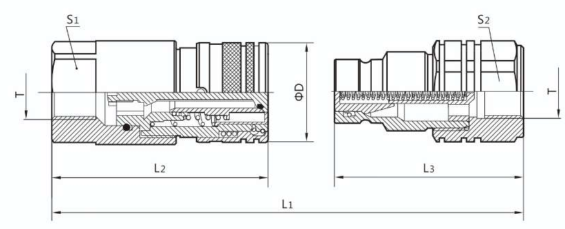

ACOPLE PLANO 3/4" SS304
Modelo: LLFF6SP
FICHA TECNICA

Descripción
Los acoples de cara plana son un tipo de acople hidraúlico de desconexión rápida diseñados para minimizar la fuga de líquido y el ingreso de contaminantes durante el acoplamiento. Su diseño plano en el punto de conexión los hace altamente efectivos en aplicaciones donde la limpieza y la minimización de fugas es indispensable.
Especificaciones Técnicas
| Estándar | ISO 16028 | L1 | 143 |
| Rosca | 3/4" NPT | L2 | 86 |
| Presión (Oper./Máx.) | 350/1440 BAR | L3 | 74,5 |
| Flujo de diseño | 74 l/m | S1 | 36 |
| Perdida por goteo | 0,015 cc | S2 | 36 |
| Temperatura de operación | -20 a 100 ºC | D | 42 |
| Material/Sello | SS304/NBR | Marca | Fluid Tech Mining Co. |
Observaciones
No usar en salmueras ni en equipos desaladores, verificar compatibilidad de fluidos con SS304.
No maniobrar en operación de bombeo, debe despresurizarse el sistema previamente.
Durante su manipulación se recomienda limpiar y retirar contaminantes de las superficies planas para alargar la vida del circuito hidráulico.